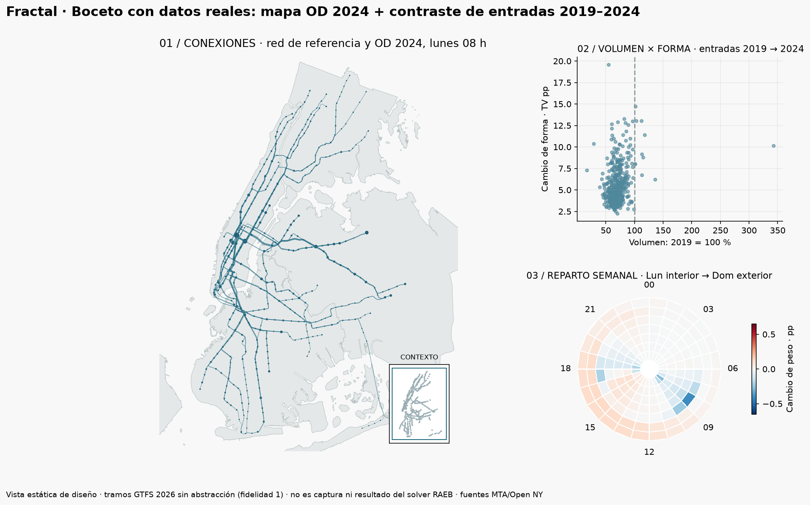

UTEC · DS5343 · 2026-2Una ciudad,
muchas conexiones y ritmos.
Explorar demanda y conexiones estimadas del subway de Nueva York para identificar territorios, horarios y corredores que necesitan estudio.
Abrir el Atlas Leer el borrador del artículo
Entradas 2019–2024 · OD estimado 2021–2024 · referencia GTFS 2026.

Boceto con datos reales en fidelidad 1; las curvas abstractas se exploran en la aplicación.Seis preguntas distintas
- ¿Qué zonas recuperaron demanda y cuáles perdieron peso entre 2019 y 2024?
- ¿Ganaron peso los viajes locales y entre boroughs o aumentó la dependencia de Manhattan entre 2021 y 2024?
- ¿Dónde y cuándo se desplazaron las franjas de mayor demanda?
- ¿Qué tramos de la red de referencia sostienen los principales intercambios?
- ¿Qué territorios generan o atraen más viajes externos y en qué franjas cambia el balance?
- ¿Qué viajes perderían conexión o requerirían mayor distancia al retirar un enlace de referencia?
Métricas, valor y estado de cada tarea. Los cálculos están preparados; varias lecturas territoriales y el escenario interactivo continúan en desarrollo.
Qué muestran los datos
En entradas 2024 frente a 2019, el índice de volumen del Bronx es 58,4 % y el de Queens 75,0 %. Brooklyn pierde volumen absoluto frente a 2019, pero gana participación del sistema. En OD 2021→2024 aumenta la cuota hacia Manhattan desde los otros tres boroughs cubiertos.
CSV completos y validación. Las horas OD son cohortes de inicio; los caminos son asignados, no observados. No medimos congestión ni capacidad.
Recorrido de exploración
Mapa como overview; zoom y selección para enfocar; dispersión para separar volumen de forma; reloj para localizar días y horas; detalles y exportación para comprobar cantidades. Base histórica 2019/2020 disponible en la derecha, con entradas en ambos extremos. Las barras de bundling cambian la representación, no la demanda.
Entregas según la guía
Guía del profesor · Papers: RAEB, KDEEB, reloj y TV · Ejecutar y reproducir · Pendientes y responsables propuestos
Equipo y fuentes
Renzo Acervo Correa · Stewart Maquera Bobadilla · José Condori Palomino
MTA / Open NY; NYC DCP para contexto territorial. D3 para composición e interacción, WebGPU para refinamiento y raster con respaldo CPU/WebGL2. Adaptación de RAEB/KDEEB, no reproducción validada idéntica. Asistencia de IA reconocida; cada resultado y límite se documenta.
Repositorio y código
Revisión del 28 de octubre de 2026. Las versiones previas se conservan; póster y videos finales pendientes para Semana 15.